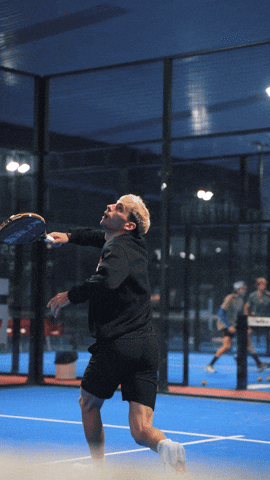

Hej! Jag är en glad och positiv kille och är 33 år som idag studerar till IT och säkerhetstekniker via Chas Academy. Mina hobbys är träning i form av gym och Padel. Samt under min fritid umgås jag gärna med familj och vänner.
En av mina favorit spelare Franco Stupaczuk.
Arbetserfarenhet
2015–2025
Produktions ledare/arbetsledare – KLS Ugglarps
Ansvarade för ett skift med 15+ anställda. Jobbade med produktion av livsmedel.
2013–2014
Maskinoperatör – Saint Gobain ISOVER AB
Jobbade som maskinoperatör inom ett företag som skapade isolering med glasfiber.
2013–2013
Försäljare – VH2 Sydväst AB
Jobbade som försäljare med demonstration/försäljning av städ produkter.
Utbildning
- IT och säkerhetstekniker – Chas Academy (2025)
- Teknikprogrammet inom Data/IT – Tycho Brahe Skolan (2009-2011)
- Ledarskapsutbildning & Kommunikation – Motivera Sverige AB (2023)
E-post: jonny.nguyen@chasacademy.se
Telefon: 072-040 52 81
LinkedIn: linkedin.com/in/jonny-nguyen-770463383
Företag inom IT och säkerhet i Helsingborg: